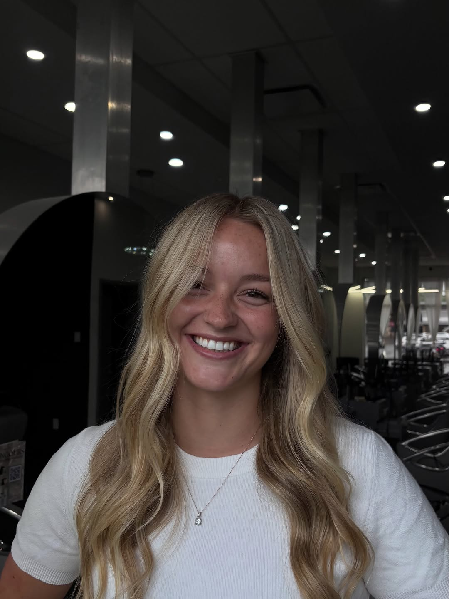
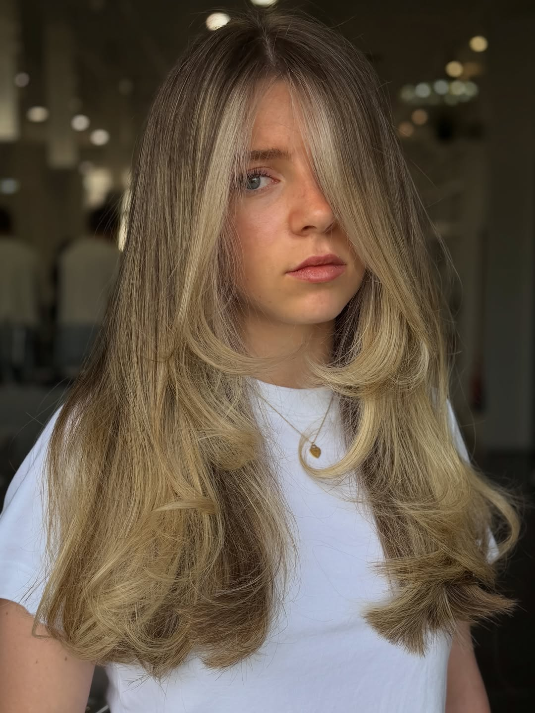
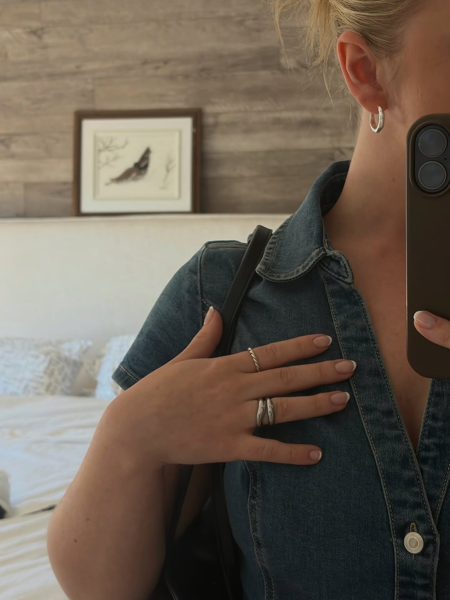
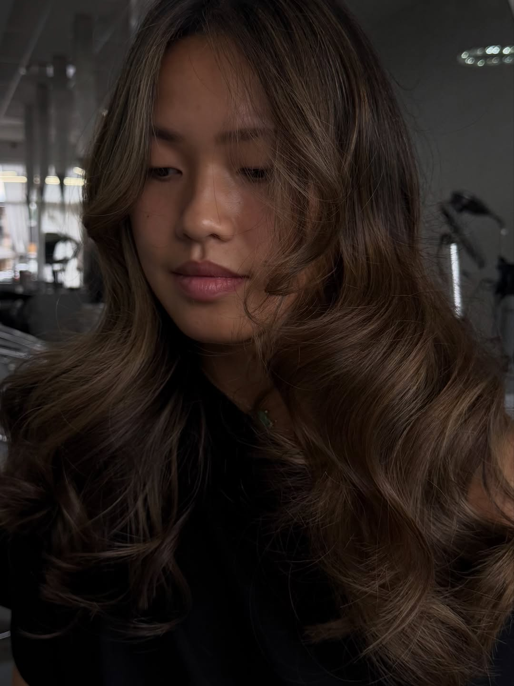
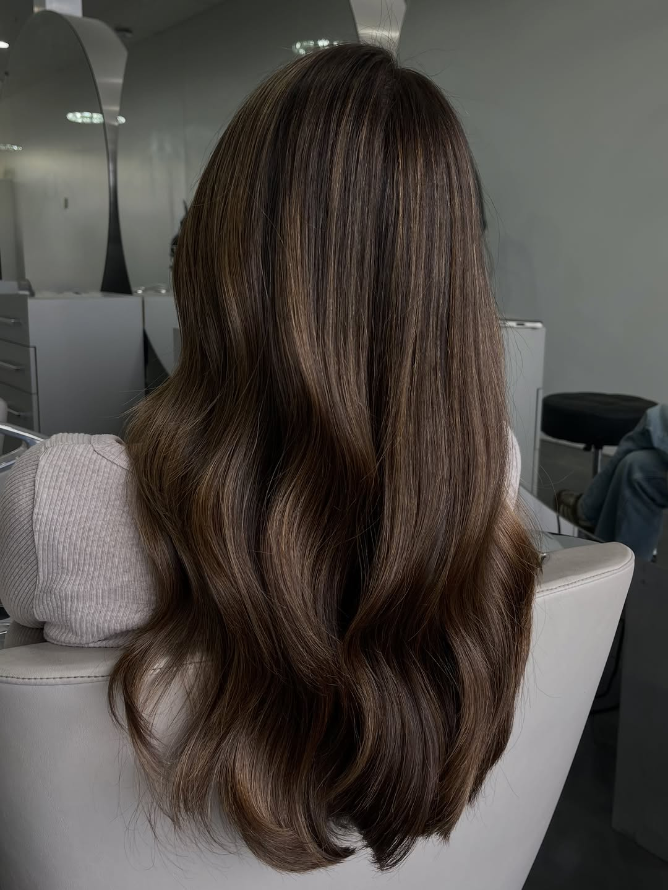
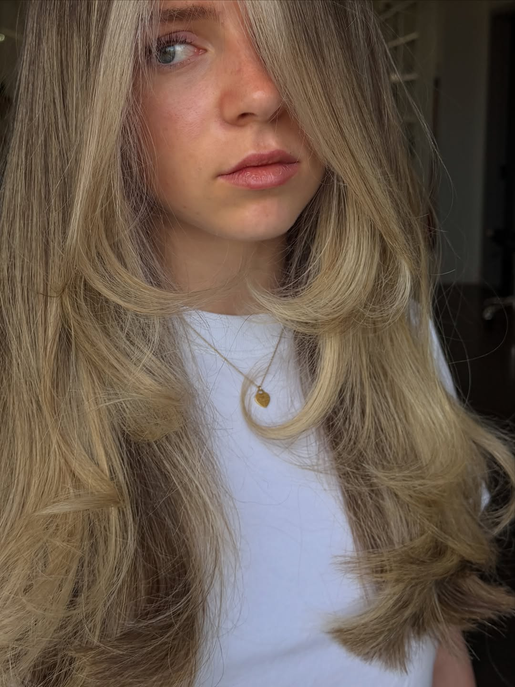
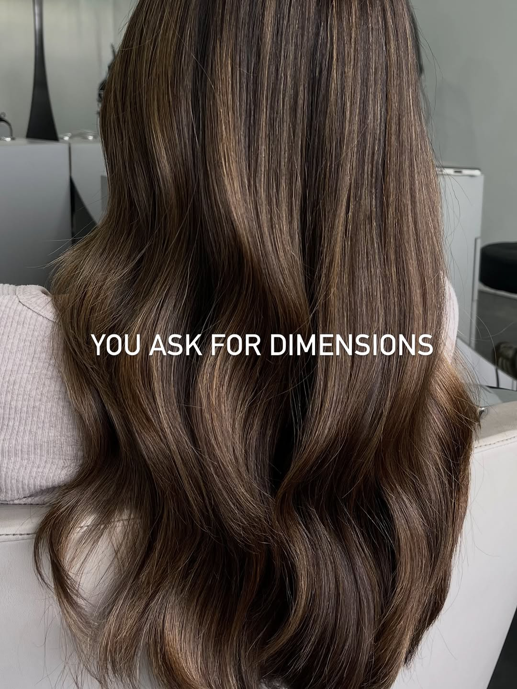
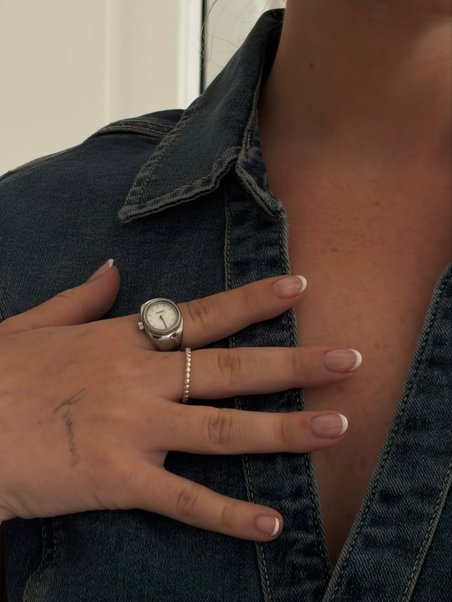
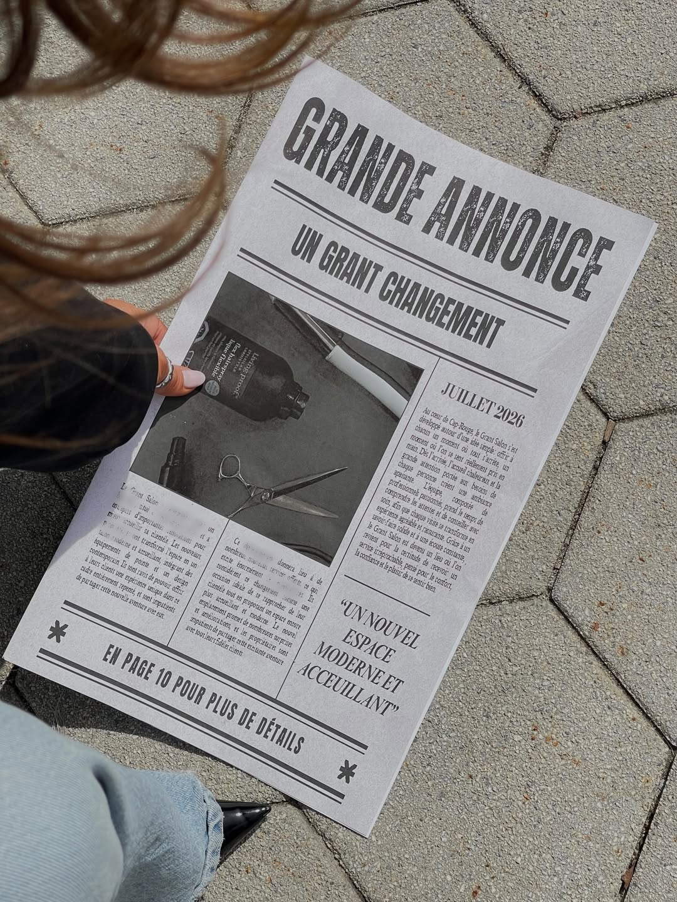

Coupe femme
Coupe personnalisée selon votre visage et votre texture, suivie d'une mise en forme soignée.
Coiffure & esthétique · Cap-Rouge, Québec
Depuis près de dix ans à Cap-Rouge, Le Grant salon habille vos cheveux avec métier et attention. Coupe, coloration, balayage, brushing et esthétique — dans un tout nouvel espace, moderne et accueillant, désormais aussi pour les hommes.

Cap-Rouge · QuébecLe salon
Le Grant salon, c'est l'histoire d'une équipe qui a fait de la coiffure un métier de précision et d'écoute. Karine, Raph et les artisans du salon accompagnent chaque cliente et chaque client dans un projet capillaire pensé sur mesure — de la coupe au balayage, du visagisme au brushing signature.
Après près d'une décennie à Cap-Rouge, le salon ouvre un nouveau chapitre : un espace plus grand, plus lumineux, plus moderne — et désormais ouvert aux hommes. Même souci du détail, même chaleur d'accueil, dans un décor à la hauteur du savoir-faire.
Services
Trois grands univers, un même standard. Chaque service commence par une consultation — on écoute, on conseille, on adapte à votre style de vie et à votre type de cheveu. Pour femmes et hommes.
Coupe personnalisée selon votre visage et votre texture, suivie d'une mise en forme soignée.
Coupe précise, dégradés nets et finition à la tondeuse ou aux ciseaux — le salon accueille maintenant les hommes.
Le brushing signature de l'équipe — volume, mouvement et brillance qui tiennent. La spécialité de Raph.
Un changement de cap assumé, accompagné de A à Z pour une nouvelle longueur qui vous ressemble.
Le savoir-faire signature de Karine et Raph — un fondu naturel, dimensionnel, pensé pour durer.
Éclaircissement ciblé pour illuminer le visage et donner du relief à la chevelure.
Ton sur ton, couverture des cheveux blancs ou nouvelle couleur — un résultat uniforme et lumineux.
Entretien de votre couleur pour garder un fini frais entre deux grands rendez-vous.
Une gamme de soins esthétiques pour compléter votre visite et prendre soin de vous en un seul endroit.
On repense votre coiffure de fond en comble — coupe, couleur et style pensés ensemble.
La coiffure qui met votre visage en valeur — proportions, traits, style de vie, tout est pris en compte.
Un moment d'écoute avant chaque service pour cerner vos envies et bâtir le bon plan.
Les tarifs sont confirmés lors de la prise de rendez-vous, selon la longueur, la densité et le service choisi. Appelez le 418 871-4444 — on trouve ensemble le service qui vous convient.
Galerie
Quelques réalisations récentes du salon — balayages, coupes et brushings. Photos issues de l'Instagram officiel @legrantsalon.








Témoignages
Quelques mots reçus de personnes qui ont confié leurs cheveux à l'équipe du Grant salon.
« Mon balayage n'a jamais été aussi beau. On m'écoute vraiment et le résultat dépasse à chaque fois ce que j'avais en tête. »
« L'accueil est chaleureux et le nouveau salon est magnifique. Je ressors toujours avec un brushing qui tient des jours. Une équipe en or. »
« Enfin un salon qui prend aussi les hommes avec autant de soin. Coupe impeccable et de bons conseils. Je recommande sans hésiter. »
Questions fréquentes
Les questions qu'on nous pose le plus souvent — réponses claires, sans détour.
Le plus simple est d'appeler au 418 871-4444. Vous pouvez aussi nous écrire en message privé sur Instagram — on vous répond avec plaisir.
Oui ! Avec le nouveau chapitre du salon, Le Grant salon accueille désormais femmes et hommes — coupe, entretien et conseils pour tous.
Ce sont deux des artisans du salon, reconnus pour leurs balayages et leurs brushings signature. Vous pouvez suivre leur travail sur Instagram : @karine.legrantsalon et @raph.legrantsalon.
Chaque coloration ou balayage débute par un moment d'écoute pour cerner vos envies, évaluer l'état du cheveu et proposer le bon plan. C'est ce qui garantit un résultat à la hauteur.
Les tarifs varient selon la longueur, la densité et le service choisi. Ils sont confirmés au moment de la prise de rendez-vous — appelez-nous, on vous guide avec plaisir.
Au 790 route Jean-Gauvin, à Cap-Rouge (Québec) — un nouvel espace moderne et accueillant, facile d'accès avec stationnement.
Prendre rendez-vous
La façon la plus simple : un appel au salon. Vous pouvez aussi nous écrire en message privé sur Instagram — on vous répond rapidement.
Horaire du salon confirmé lors de la prise de rendez-vous.